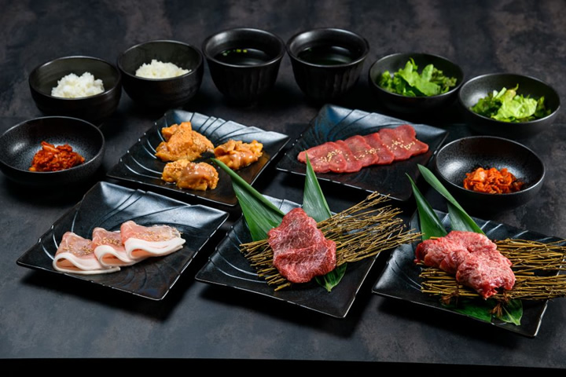
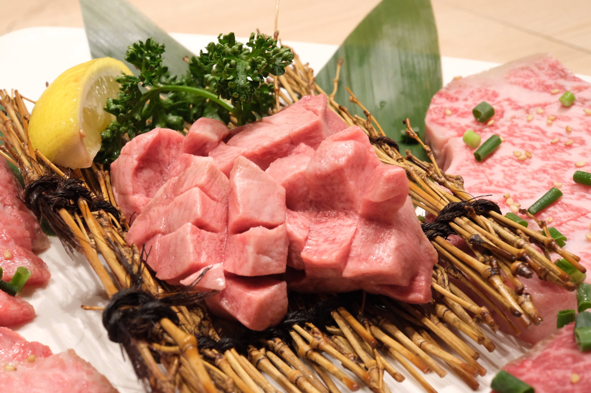
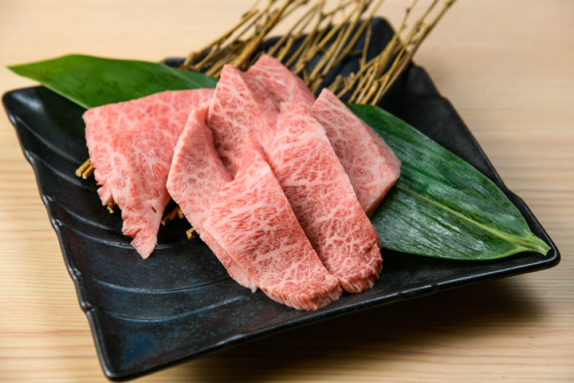
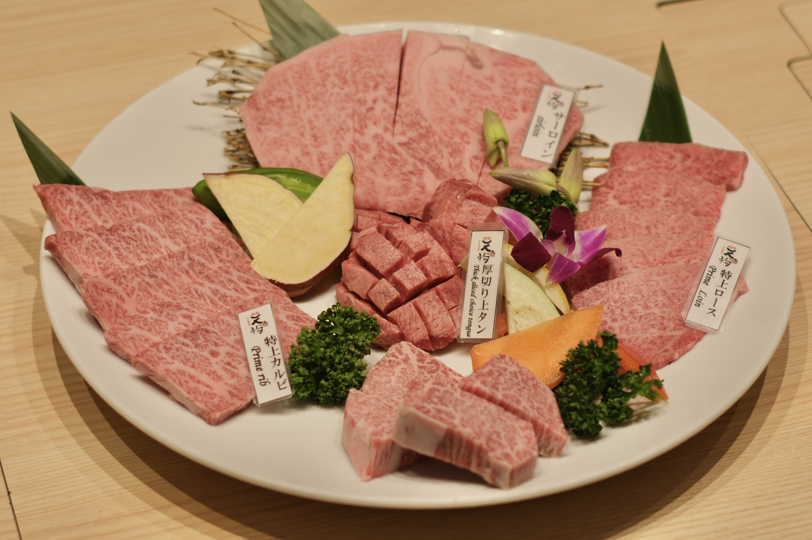
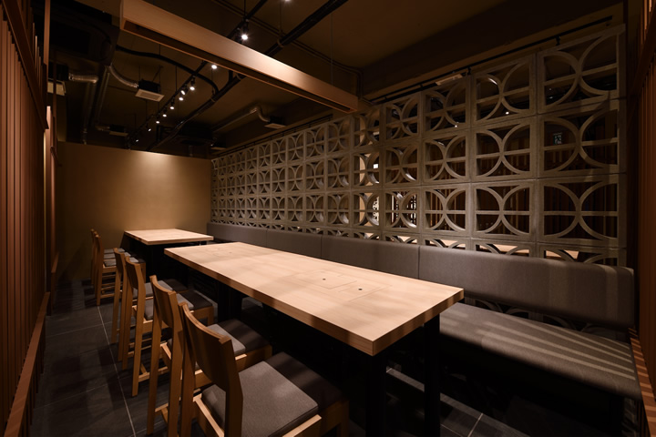
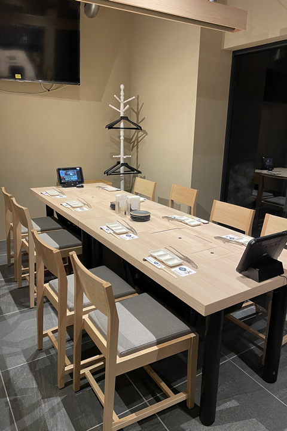
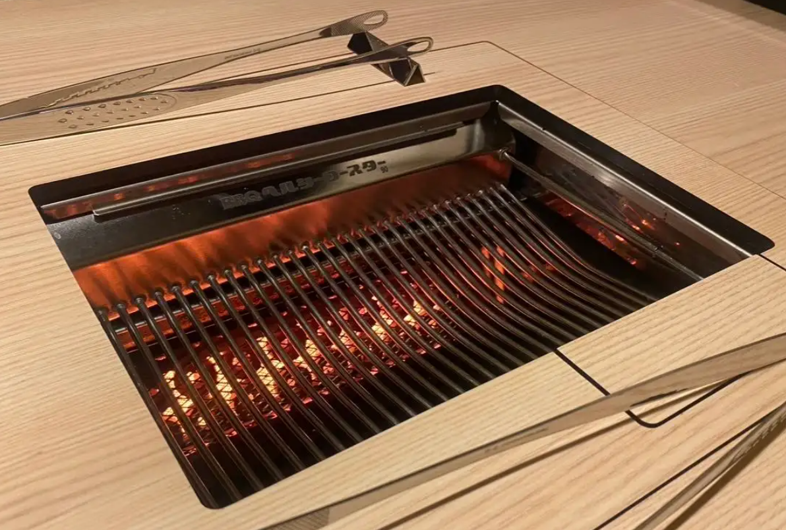
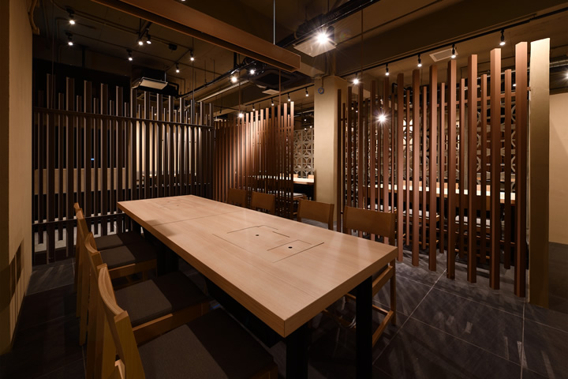

石 垣 牛 食 べ 放 題
沖縄市・諸見里の一角。石垣牛・もとぶ牛など県産和牛の食べ放題を、無煙ロースターで、煙もにおいも気にせずに。地元のお客さまも、海外や基地からお越しの方々も、肩の力を抜いて寛げる高級焼肉店。




無煙ロースターを備えた席、大切な時間のための個室、そして外の光と風が入る開放的なフロア。焼肉のためだけの動線と空調で、肩肘の張らない上質さを設えました。
タブレット注文は日本語と英語に対応。カウンター越しの気配りと、テクノロジーがそっと寄り添うサービスで、どなたでも心地よくご滞在いただけます。




A Night
Of Wagyu.
焼くほどに、話が弾む。
煙もにおいも、気にならないから、
心ゆくまで、ゆっくりと。— A Night of Wagyu.
Smokeless roasters, real wagyu, unhurried time. A quiet corner in Okinawa City to slow down around the table.